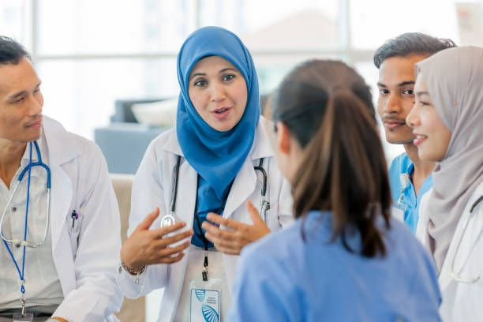
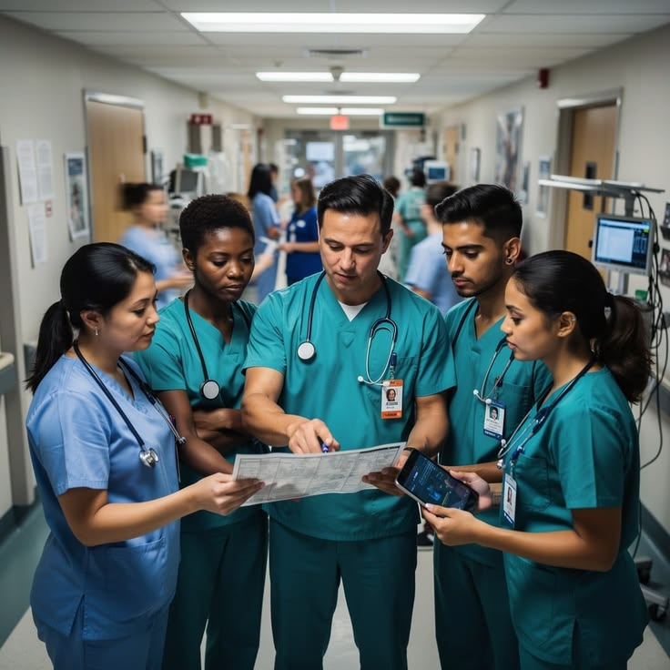
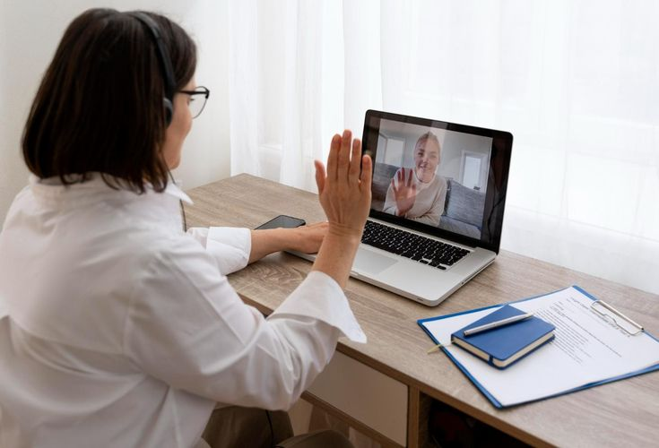
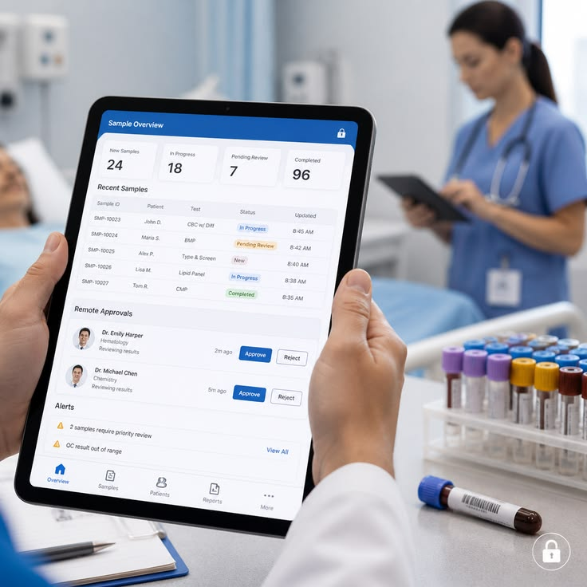
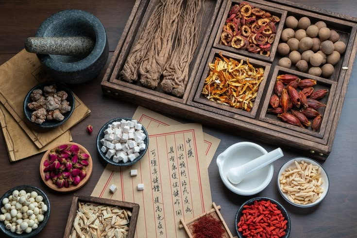

Malaysia Health Innovation
Telemedicine & Islamic Healthcare
Eksplorasi inovasi pelayanan kesehatan Malaysia melalui transformasi digital dan pendekatan pelayanan kesehatan berbasis nilai Islam.
Country Profile
Digital Healthcare
Holistic Care
Professional Role
Kelas 3STJ
PROGRAM STUDI SARJANA TERAPAN KEPERAWATAN
JURUSAN KEPERAWATAN
POLITEKNIK KESEHATAN KEMENTERIAN KESEHATAN BANDUNG
Aghnia Nurul ‘Afifah
P17320124441
Milca Alysseane Yohanes
P17320124417
Revita Gultom
P17320124469
Zaenab Shalsabil. A
P17320124438
Zhillan Insyiraah
P17320124439
COUNTRY PROFILE
Malaysia at a Glance
Malaysia
Malaysia merupakan negara di Asia Tenggara yang memiliki sistem pelayanan kesehatan publik dan swasta yang saling melengkapi. Sektor publik menjadi bagian penting dalam penyediaan pelayanan kesehatan yang didukung oleh pemerintah, sementara sektor swasta berkembang sebagai bagian dari sistem pelayanan kesehatan nasional.
Sistem kesehatan Malaysia mencakup pelayanan promotif, preventif, kuratif, rehabilitatif, serta pelayanan kesehatan di tingkat primer hingga tersier.
Populasi · 2025
Harapan hidup · 2024
Sistem pelayanan kesehatan
HEALTHCARE SYSTEM
Sistem Pelayanan Kesehatan Malaysia
Public Healthcare
Pelayanan kesehatan publik dikelola pemerintah dan didukung melalui pendanaan publik serta menyediakan berbagai layanan kesehatan bagi masyarakat.
Primary Care
Pelayanan primer berperan dalam promosi kesehatan, pencegahan penyakit, pengobatan awal, dan menjadi pintu masuk masyarakat ke sistem kesehatan.
Private Healthcare
Sektor swasta melengkapi pelayanan publik melalui klinik, rumah sakit, layanan spesialis, serta berbagai layanan kesehatan lainnya.
HEALTH LANDSCAPE
Gambaran Kesehatan Masyarakat
Non-Communicable Diseases
Penyakit tidak menular menjadi bagian penting dalam tantangan kesehatan masyarakat dan membutuhkan upaya promotif serta preventif berkelanjutan.
Population Ageing
Perubahan struktur penduduk meningkatkan kebutuhan terhadap pelayanan kesehatan jangka panjang, termasuk perawatan bagi kelompok lanjut usia.
Digital Health
Transformasi digital membuka peluang untuk meningkatkan akses, koordinasi, dan kontinuitas pelayanan kesehatan.
TRANSCULTURAL NURSING
Transcultural Nursing in Malaysia

Transcultural nursing merupakan pendekatan keperawatan yang mempertimbangkan perbedaan budaya, agama, nilai, kebiasaan, kondisi sosial, serta kebutuhan individu dalam pemberian asuhan keperawatan.
Faktor Teknologi
Technological FactorsPerkembangan teknologi kesehatan di Malaysia mencakup telemedicine, konsultasi daring, rekam medis elektronik, dan berbagai layanan kesehatan digital.
Faktor Agama & Filosofis
Religious and Philosophical FactorsMalaysia memiliki masyarakat dengan latar belakang agama dan keyakinan yang beragam. Keyakinan agama dapat memengaruhi cara pasien memahami penyakit, pengobatan, makanan, privasi, dan praktik ibadah.
Faktor Kekerabatan & Sosial
Kinship and Social FactorsKeluarga memiliki peran penting dalam kehidupan masyarakat Malaysia dan dapat menjadi sumber dukungan selama pasien menjalani perawatan.
Faktor Nilai Budaya & Gaya Hidup
Cultural Values and LifewaysMasyarakat dapat memiliki praktik kesehatan tradisional dan komplementer yang dipengaruhi oleh budaya, keluarga, dan pengalaman sebelumnya.
Faktor Politik & Hukum
Political and Legal FactorsPelayanan kesehatan di Malaysia dipengaruhi oleh kebijakan pemerintah, regulasi pelayanan kesehatan, hak pasien, serta ketentuan yang mengatur tenaga kesehatan dan penggunaan teknologi dalam pelayanan kesehatan.
Faktor Ekonomi
Economic FactorsKondisi ekonomi dapat memengaruhi kemampuan pasien dalam memperoleh pelayanan kesehatan, membeli obat, melakukan pemeriksaan, menggunakan transportasi, maupun mengakses teknologi kesehatan seperti telemedicine.
Faktor Pendidikan
Educational FactorsTingkat pendidikan dan literasi kesehatan dapat memengaruhi kemampuan seseorang dalam memahami informasi kesehatan, mengikuti instruksi pengobatan, mengambil keputusan, dan menggunakan teknologi kesehatan.
GLOBAL HEALTH
Malaysia in Global Health

Building a more equitable, sustainable & resilient health system
Malaysia terus melakukan reformasi sistem kesehatan untuk menghadapi peningkatan penyakit tidak menular, perubahan demografi, kebutuhan pelayanan yang semakin kompleks, serta perkembangan teknologi kesehatan.
Salah satu landasan utama reformasi tersebut adalah Health White Paper yang menempatkan pelayanan primer, teknologi digital, pencegahan penyakit, pembiayaan, tenaga kesehatan, dan pemerataan akses sebagai bagian dari agenda reformasi kesehatan nasional.
Health White Paper disetujui Parlemen Malaysia
HEALTH REFORM
4 Pilar Reformasi Kesehatan
Transforming Health Service Delivery
Memprioritaskan pelayanan kesehatan primer, mengoptimalkan pelayanan rumah sakit, memperkuat kerja sama publik-swasta, memanfaatkan teknologi digital, dan meningkatkan pemerataan pelayanan.
Health Promotion & Disease Prevention
Memperkuat fungsi kesehatan masyarakat, pencegahan penyakit, promosi kesehatan, serta kolaborasi lintas sektor.
Sustainable & Equitable Financing
Mendorong pembiayaan kesehatan yang berkelanjutan dan memastikan masyarakat memperoleh pelayanan yang komprehensif dan terjangkau.
Stronger Health System & Governance
Memperkuat kebijakan, regulasi, tenaga kesehatan, penelitian, inovasi, dan pendekatan berbasis evidence.
GLOBAL HEALTH CHALLENGE
Non-Communicable Diseases in Malaysia
Penyakit tidak menular seperti penyakit kardiovaskular, kanker, diabetes, dan penyakit pernapasan kronis menjadi tantangan besar bagi sistem kesehatan Malaysia.
HEALTH PROGRAMS & PRIORITIES
Program dan Prioritas Kesehatan
Universal Health Coverage
Meningkatkan akses masyarakat terhadap pelayanan kesehatan yang berkualitas dan terjangkau.
NCD Prevention
Memperkuat pencegahan dan pengendalian faktor risiko penyakit tidak menular melalui pelayanan primer.
Digital Health
Memanfaatkan teknologi digital untuk meningkatkan akses, koordinasi, pemantauan, dan kontinuitas pelayanan kesehatan.
Health Workforce
Memperkuat kapasitas dan kompetensi tenaga kesehatan untuk menghadapi kebutuhan pelayanan yang terus berkembang.
IMPACT ON HEALTHCARE
Dampak terhadap pelayanan kesehatan
Akses lebih luas
Penguatan primary healthcare dan teknologi digital membantu memperluas akses pelayanan.
Preventive Care
Fokus bergeser dari hanya mengobati penyakit menuju promosi kesehatan dan pencegahan.
Continuity of Care
Pemanfaatan data dan teknologi mendukung pemantauan pasien serta kesinambungan pelayanan.
Evidence-Based Practice
Reformasi mendorong penelitian, inovasi, dan pengambilan keputusan berbasis bukti.
KEBIJAKAN KESEHATAN
Telemedicine, Health White Paper & Islamic Healthcare
Malaysia Telemedicine Guidelines · 2021
Mengatur standar praktik telemedicine, termasuk aspek etika, keamanan data, dan tanggung jawab hukum tenaga medis.
Health White Paper · 2023
Menjadi peta jalan transformasi sistem kesehatan dengan penekanan pada pencegahan, pembiayaan, transformasi pelayanan, dan integrasi kesehatan digital.
Ibadah-Friendly Hospital → SCH
Konsep pelayanan berkembang dari Ibadah-Friendly Hospital menuju Shariah-Compliant Hospital untuk mengakomodasi kebutuhan spiritual pasien Muslim.
✓ Dampak Positif
- Peningkatan akses bagi masyarakat pedalaman dan lansia.
- Efisiensi waktu dan biaya, terutama untuk kontrol rutin.
- Peningkatan kepuasan dan kepercayaan pasien Muslim.
⚠ Tantangan
- Kesenjangan infrastruktur dan literasi digital.
- Keamanan data dan keterbatasan pemeriksaan fisik langsung.
- Kesiapan SDM untuk spiritual care dan integrasi teknologi.
HEALTH TECHNOLOGY
Telemedicine in Malaysia

From Distance Care to Virtual Healthcare
Telemedicine di Malaysia merupakan bagian dari perkembangan digital health yang memungkinkan tenaga kesehatan memberikan layanan tertentu melalui teknologi komunikasi digital.
Menurut Kementerian Kesihatan Malaysia, layanan telemedicine telah diperkenalkan sejak tahun 1997, salah satunya untuk membantu tenaga medis di fasilitas luar bandar melakukan konsultasi dengan dokter spesialis di rumah sakit.
DEVELOPMENT TIMELINE
Perkembangan Telemedicine Malaysia
Telemedicine diperkenalkan
Digunakan untuk mendukung konsultasi antara tenaga medis di fasilitas luar bandar dengan dokter spesialis di rumah sakit.
Virtual Clinic
Konsep Virtual Clinic menjadi bagian dari inisiatif reformasi kesehatan dan transformasi digital pelayanan kesehatan.
Virtual Consultation
KKM mengembangkan pedoman pelayanan konsultasi secara maya untuk mendukung pelayanan kesehatan yang terintegrasi.
Online Healthcare Services
KKM menerbitkan Guideline on Online Healthcare Services 2025 sebagai panduan penyediaan layanan kesehatan secara online.
ONLINE HEALTHCARE SERVICES
Apa Saja yang Dapat Dilakukan?
Virtual Consultation
Konsultasi antara pasien dan tenaga kesehatan melalui platform digital yang sesuai.
Follow-up
Pemantauan dan tindak lanjut untuk pasien dengan kondisi yang stabil.
Health Counselling
Konseling kelompok untuk bidang tertentu seperti psikologi, nutrisi, dan rehabilitasi.
Support Services
Dukungan seperti layanan obat, laboratorium, dan pemeriksaan imaging dalam kondisi yang sesuai.
IMPORTANT
Telemedicine Tidak untuk Semua Kondisi
Emergency Cases
Kondisi gawat darurat yang membutuhkan penanganan segera tidak ditujukan untuk layanan online.
Complex Treatment
Kondisi yang membutuhkan perawatan medis kompleks atau pemeriksaan langsung memerlukan pelayanan tatap muka.
Stable Follow-up
Pasien dengan kondisi stabil dan membutuhkan tindak lanjut tertentu dapat menggunakan layanan online sesuai ketentuan.
GLOBAL HEALTH IMPACT
Mengapa Telemedicine Penting?
ISLAMIC HEALTHCARE
Hospital Mesra Ibadah

Healthcare that cares for body, mind & spirit
Hospital Mesra Ibadah (HMI) merupakan salah satu inisiatif Kementerian Kesihatan Malaysia yang bertujuan memastikan kebutuhan ibadah dan spiritual pasien Muslim tetap diperhatikan selama menjalani perawatan di rumah sakit.
Pendekatan ini mengintegrasikan pelayanan kesehatan dengan bimbingan keagamaan sehingga pasien dapat menjalankan ibadah sesuai dengan kondisi dan kemampuan mereka.
Physical
Psychological
Mental
Spiritual
HOSPITAL MESRA IBADAH
Tujuan Utama HMI
Memudahkan Ibadah
Membantu pasien Muslim menjalankan ibadah selama mendapatkan perawatan di rumah sakit sesuai kondisi dan kemampuan.
Bimbingan Spiritual
Memberikan dukungan dan bimbingan spiritual kepada pasien serta keluarga selama proses perawatan.
Kompetensi Staf
Meningkatkan pengetahuan dan keterampilan staf mengenai fiqh ibadah dan kebutuhan spiritual pasien.
Holistic Healthcare
Mengintegrasikan aspek fisik, psikologis, mental, dan spiritual dalam pelayanan kesehatan.
PATIENT-CENTERED CARE
Pelayanan untuk Pasien Muslim
Panduan Solat Ketika Sakit
Pasien dapat memperoleh bimbingan mengenai pelaksanaan solat sesuai kemampuan fisik, termasuk posisi duduk atau berbaring.
Wuduk & Tayamum
Fasilitas dan panduan dapat disediakan untuk membantu pasien melakukan wuduk atau tayamum ketika kondisi kesehatan membatasi aktivitas.
Arah Kiblat & Fasilitas Ibadah
Lingkungan rumah sakit dapat dilengkapi dengan penanda arah kiblat, perlengkapan ibadah, dan ruang solat.
Spiritual Support
Pasien dan keluarga dapat memperoleh bimbingan serta konsultasi keagamaan melalui Unit Hal Ehwal Islam rumah sakit.
HEALTHCARE TEAM
Peran Tenaga Kesehatan
Respect
Menghormati keyakinan dan kebutuhan spiritual pasien Muslim.
Assessment
Mengidentifikasi kebutuhan ibadah dan dukungan spiritual pasien.
Facilitation
Membantu menyediakan fasilitas dan menghubungkan pasien dengan sumber dukungan yang sesuai.
Collaboration
Berkolaborasi dengan keluarga dan Unit Hal Ehwal Islam sesuai kebutuhan pasien.
NURSING INNOVATION
Nursing & Digital Technology

Nurses as part of the digital healthcare transformation
Perkembangan teknologi kesehatan mengubah cara tenaga kesehatan memberikan pelayanan kepada pasien. Perawat tidak hanya berperan dalam memberikan asuhan secara langsung, tetapi juga perlu mampu menggunakan teknologi digital untuk mendukung komunikasi, edukasi, pemantauan, dokumentasi, dan kesinambungan pelayanan.
Dalam konteks telemedicine, perawat dapat menjadi penghubung antara pasien, keluarga, dan tim kesehatan melalui komunikasi digital yang aman dan berorientasi pada kebutuhan pasien.
NURSING EDUCATION
Perkembangan Edukasi Perawat di Malaysia
Pendidikan keperawatan di Malaysia mengalami transformasi dari pelatihan informal pada era kolonial hingga pendidikan tinggi, pengembangan profesional berkelanjutan, dan pembelajaran berbasis digital pada era modern.
Era Kolonial
Profesi keperawatan diperkenalkan di Tanah Melayu pada awal tahun 1800-an oleh pemerintah British melalui para rahib Katolik yang mengelola rumah sakit awal di Pulau Pinang dan Singapura.
Pelatihan informal sambil kerja bagi warga lokal mulai dilakukan pada tahun 1938 di Johor Bahru dengan bimbingan tenaga profesional Eropa. Pelatihan berfokus pada perawatan penyembuhan atau curative care, tetapi sempat terhenti akibat Perang Dunia Kedua.
Era Pasca-Perang & Kemerdekaan
Setelah perang, sekolah keperawatan mulai berkembang di Johor Bahru, Pulau Pinang, dan Kuala Lumpur.
Kolej Kejururawatan Pulau Pinang yang didirikan pada tahun 1947 menjadi perguruan tinggi keperawatan pertama di Malaysia.
Lembaga Jururawat Malaysia (LJM) atau Malaysian Nursing Board kemudian dibentuk di bawah Nurses Act 1950 untuk menyatukan standar pelatihan, ujian, lisensi, dan registrasi.
Era Pertumbuhan Kurikulum & Sektor Swasta
Sektor swasta mulai berkontribusi dalam pendidikan keperawatan melalui pendirian Sekolah Kejururawatan Tun Tan Cheng Lock di Assunta Hospital pada tahun 1967.
Pada periode ini, pendidikan keperawatan mengalami peningkatan status akademik menjadi program diploma dan sarjana muda.
Era Modern & Pendidikan Tinggi
Pada akhir tahun 1992, pendidikan keperawatan ditingkatkan dari Sijil Kejururawatan Umum menjadi Diploma Kejururawatan dengan porsi teori yang lebih besar.
Tahun 1993 menjadi awal perkembangan pendidikan tinggi keperawatan di Universiti Malaya melalui program Sarjana Muda Sains Keperawatan (BNSc).
Saat ini pendidikan keperawatan berkembang hingga jenjang Master dan PhD melalui berbagai universitas negeri di Malaysia.
CPD & Pendidikan Digital
Sejak tahun 2008, Lembaga Jururawat Malaysia mewajibkan perawat terdaftar mengikuti Continuous Professional Development (CPD) dengan minimal 25 poin per tahun sebagai bagian dari persyaratan perpanjangan Annual Practicing Certificate (APC).
Kegiatan CPD dapat dilakukan melalui seminar, lokakarya, publikasi ilmiah, hingga pembelajaran mandiri.
DIGITAL NURSING ROLE
Peran Perawat dalam Teknologi Kesehatan
Digital Communication
Menggunakan media digital untuk berkomunikasi dengan pasien, keluarga, dan anggota tim kesehatan secara efektif.
Patient Monitoring
Membantu melakukan pemantauan kondisi pasien dan mengenali perubahan kondisi yang membutuhkan tindak lanjut.
Health Education
Memberikan edukasi kesehatan melalui media digital dengan memperhatikan literasi kesehatan pasien.
Data & Privacy
Menjaga kerahasiaan, keamanan, dan penggunaan data pasien sesuai prinsip etika dan profesionalisme.
Care Coordination
Mengkoordinasikan kebutuhan pasien dengan dokter, keluarga, fasilitas kesehatan, dan tenaga kesehatan lainnya.
Digital Literacy
Mengembangkan kemampuan menggunakan teknologi sekaligus menilai informasi kesehatan secara kritis.
TELEMEDICINE CARE FLOW
Alur Peran Perawat dalam Telemedicine
Patient Contact
Mengidentifikasi kebutuhan dan keluhan pasien.
Assessment
Mengumpulkan informasi kesehatan yang relevan.
Education
Memberikan informasi dan edukasi yang sesuai.
Follow-up
Melakukan pemantauan dan tindak lanjut.
BENEFITS
Manfaat
Memperluas akses pasien terhadap pelayanan kesehatan.
Mendukung komunikasi dan kontinuitas pelayanan.
Meningkatkan efisiensi dalam pemantauan pasien tertentu.
Mendukung edukasi dan self-management pasien.
CHALLENGES
Tantangan
Kesenjangan akses internet dan perangkat digital.
Perbedaan tingkat literasi digital pasien.
Risiko terhadap privasi dan keamanan data kesehatan.
Tidak semua kondisi pasien dapat dinilai secara virtual.
TEKNOLOGI KESEHATAN TERBARU
Teknologi yang Relevan dengan Praktik Keperawatan
Telemedicine
Konsultasi virtual berkembang dan diperkuat melalui agenda digitalisasi kesehatan.
Wearable Devices
Perangkat wearable mendukung pemantauan kesehatan sehari-hari dan pemantauan mandiri.
Artificial Intelligence
AI mulai digunakan untuk dukungan pengambilan keputusan klinis dan administrasi, dengan dilema etika yang perlu diperhatikan.
Electronic Health Record
EHR terus diperluas untuk mendukung sistem kesehatan yang lebih berbasis data.
Peran Perawat
- Menjembatani data digital dan kebutuhan pasien secara personal serta tetap empatik dan sesuai konteks budaya.
- Memberikan edukasi digital kepada pasien, terutama lansia atau masyarakat dengan literasi digital rendah.
- Terlibat dalam pengawasan etika penggunaan teknologi, privasi data, dan akuntabilitas AI.
- Turut serta dalam pengambilan kebijakan institusi terkait digitalisasi pelayanan.
Tantangan Implementasi
TRADITIONAL MEDICINE
Traditional & Complementary Medicine

Pengobatan tradisional tetap menjadi bagian dari pilihan kesehatan masyarakat Malaysia.
Dalam sistem kesehatan Malaysia, pengobatan tradisional dan komplementer dikenal sebagai Traditional and Complementary Medicine (T&CM) Pemerintah secara resmi mengakui tujuh bidang praktik.
Pengobatan Tradisional Melayu merupakan praktik kesehatan yang berkembang dalam masyarakat Melayu dan menggunakan pengetahuan yang diwariskan secara turun-temurun.
Contoh Praktik
- Penggunaan tanaman/herbal sebagai obat
- Pijat tradisional
- Terapi fisik tradisional
- Penggunaan ramuan tertentu
- Praktik perawatan setelah melahirkan
Nilai Budaya
Pengobatan tradisional Melayu tidak hanya berkaitan dengan kondisi fisik, tetapi juga dapat dipengaruhi oleh kepercayaan, nilai keluarga, dan budaya masyarakat.
Dalam Keperawatan
Perawat perlu menanyakan penggunaan herbal atau terapi tradisional kepada pasien karena beberapa bahan dapat berinteraksi dengan obat medis.
Traditional Chinese Medicine merupakan sistem pengobatan yang berasal dari tradisi Tiongkok dan telah digunakan di Malaysia.
Contoh Praktik
- Akupunktur
- Pengobatan herbal
- Cupping/bekam
- Tui Na (pijat tradisional Tiongkok)
- Tai Chi dan latihan tertentu
Pendekatan
TCM umumnya memandang kesehatan sebagai keseimbangan tubuh dan menggunakan berbagai metode untuk mempertahankan atau memulihkan keseimbangan tersebut.
Dalam Keperawatan
Perawat perlu mendokumentasikan penggunaan TCM dan memastikan terapi tersebut tidak mengganggu pengobatan konvensional.
Pengobatan tradisional India di Malaysia terutama berkaitan dengan Ayurveda dan tradisi pengobatan India lainnya.
Contoh
- Penggunaan tanaman herbal
- Terapi minyak
- Pengaturan pola makan
- Yoga
- Praktik Ayurveda lainnya
Fokus
Menjaga keseimbangan tubuh, pikiran, gaya hidup, dan lingkungan.
Dalam Keperawatan
Perawat perlu menghargai keyakinan pasien sekaligus memastikan penggunaan herbal atau terapi komplementer dilakukan secara aman.
Homeopati merupakan sistem pengobatan komplementer yang menggunakan zat dalam pengenceran tertentu berdasarkan prinsip homeopati.
Di Malaysia, homeopati termasuk salah satu bidang praktik T&CM yang mendapat perhatian dalam kerangka regulasi T&CM.
Hal yang Perlu Diperhatikan
- Pasien tetap perlu mendapatkan diagnosis yang tepat.
- Penggunaan homeopati tidak boleh menyebabkan pasien meninggalkan pengobatan yang diperlukan.
- Perawat perlu mengetahui seluruh terapi yang digunakan pasien.
Chiropractic berfokus terutama pada sistem muskuloskeletal, khususnya tulang belakang dan gangguan yang berkaitan dengan sistem gerak.
Contoh Layanan
- Pemeriksaan muskuloskeletal
- Manipulasi atau penyesuaian tulang belakang
- Edukasi postur dan aktivitas fisik
Potensi Manfaat
Dapat digunakan sebagai pendekatan komplementer pada beberapa keluhan muskuloskeletal.
Perhatian Keperawatan
Perawat perlu memperhatikan kondisi pasien, riwayat penyakit, serta kemungkinan risiko sebelum pasien menjalani terapi.
Osteopathy merupakan pendekatan yang berfokus pada hubungan antara struktur dan fungsi tubuh, terutama sistem muskuloskeletal.
Pendekatan
- Teknik manual
- Mobilisasi
- Manipulasi
- Latihan dan edukasi
Tujuan
Mendukung fungsi tubuh dan mengurangi gangguan pada sistem muskuloskeletal.
Dalam Pelayanan Keperawatan
Perawat dapat berperan dalam edukasi pasien, pemantauan kondisi, dan komunikasi dengan tenaga kesehatan lain untuk memastikan terapi tetap aman.
Islamic Medical Practice (IMP) merupakan salah satu bidang T&CM yang berkembang dalam konteks masyarakat Muslim Malaysia.
Pendekatan ini dapat mencakup aspek kesehatan yang berkaitan dengan nilai dan prinsip Islam, termasuk perhatian terhadap kebutuhan spiritual pasien.
Contoh Aspek yang Diperhatikan
- Doa dan dukungan spiritual
- Penggunaan bahan yang sesuai dengan prinsip halal
- Pemenuhan kebutuhan ibadah selama sakit
- Pendekatan yang menghormati keyakinan pasien
- Dukungan keluarga dalam proses perawatan
Dalam Keperawatan
Perawat dapat mengintegrasikan kebutuhan spiritual pasien dengan tetap mempertahankan keselamatan pasien dan prinsip evidence-based practice.
Pengobatan Tradisional
Islamic Medical Practice dapat mencakup pendekatan spiritual seperti ruqyah serta bahan atau metode yang dianggap sesuai prinsip Islam. Pengobatan tradisional Melayu juga menggunakan tanaman obat dan bahan alami.
Pendekatan tersebut dapat mendukung holistic healthcare selama tetap memperhatikan kondisi medis pasien dan tidak menggantikan terapi medis yang diperlukan.
Regulasi
Praktik T&CM memiliki dasar hukum melalui Traditional and Complementary Medicine Act 2016 (Act 775). Registrasi dan kualifikasi praktisi menjadi bagian penting dalam perlindungan masyarakat.
Untuk Islamic Medical Practice, persyaratan registrasi juga mempertimbangkan aspek keagamaan sesuai ketentuan yang berlaku.
Evidence-Based Practice
EBP tidak berarti menghilangkan nilai Islam. Praktik yang sesuai prinsip Islam dapat dipertahankan dengan tetap didukung bukti ilmiah dan keselamatan pasien. Bukti untuk beberapa terapi T&CM masih terbatas sehingga diperlukan penelitian yang lebih kuat.
GROUP REFLECTION
Reflection & Learning
What we learned from Malaysia's healthcare innovation
Pembelajaran mengenai sistem kesehatan Malaysia memberikan perspektif bahwa inovasi kesehatan tidak hanya berkaitan dengan teknologi, tetapi juga dengan budaya, spiritualitas, kebijakan, dan peran tenaga kesehatan.
OUR LEARNING
Apa yang kami pelajari?
Healthcare is Contextual
Sistem kesehatan suatu negara dipengaruhi oleh kebijakan, budaya, kebutuhan masyarakat, sumber daya, dan perkembangan teknologi.
Innovation expands access
Telemedicine dapat membantu memperluas akses pelayanan dan mendukung kesinambungan perawatan, terutama ketika kunjungan langsung tidak selalu diperlukan.
Spiritual care matters
Hospital Mesra Ibadah menunjukkan pentingnya memperhatikan kebutuhan spiritual sebagai bagian dari pelayanan kesehatan yang holistik.
Nurses must adapt
Perawat perlu mengembangkan kemampuan digital tanpa meninggalkan komunikasi terapeutik, empati, keselamatan pasien, dan clinical judgment.
GROUP 02 REFLECTION
Our perspective as future nurses
Setelah mempelajari inovasi kesehatan di Malaysia, kami menyadari bahwa perkembangan pelayanan kesehatan perlu berjalan seimbang antara inovasi teknologi dan kebutuhan manusia. Telemedicine menunjukkan bagaimana teknologi dapat membantu meningkatkan akses dan kontinuitas pelayanan.
Namun, teknologi tidak dapat menggantikan seluruh aspek pelayanan keperawatan. Perawat tetap memiliki peran penting dalam melakukan pengkajian, memberikan edukasi, membangun hubungan terapeutik, menjaga keselamatan pasien, dan memenuhi kebutuhan fisik maupun spiritual.
Sebagai calon perawat, kami perlu terbuka terhadap perkembangan teknologi sekaligus mempertahankan nilai profesionalisme, empati, etika, dan patient-centered care.
KEY TAKEAWAYS
Three things we will carry forward
Technology
Gunakan teknologi untuk memperkuat, bukan menggantikan, hubungan manusia.
Holistic Care
Perhatikan kebutuhan fisik, psikologis, sosial, dan spiritual pasien.
Lifelong Learning
Terus belajar mengikuti perkembangan ilmu pengetahuan dan teknologi kesehatan.
OPPORTUNITIES FOR INDONESIA
🇮🇩 Peluang Penerapan di Indonesia
Pengembangan Telemedicine
Telemedicine dapat dimanfaatkan untuk meningkatkan akses pelayanan kesehatan di daerah terpencil dan kepulauan.
Penguatan Spiritual Care
Pendekatan Hospital Mesra Ibadah dapat menjadi inspirasi dalam mengembangkan pelayanan yang memperhatikan kebutuhan spiritual pasien.
Peningkatan Literasi Digital Perawat
Perawat perlu meningkatkan kompetensi dalam penggunaan teknologi kesehatan dan komunikasi digital.
Integrasi Budaya dalam Pelayanan
Pengembangan pelayanan kesehatan perlu mempertimbangkan budaya, nilai, agama, dan kebutuhan masyarakat Indonesia yang beragam.
RECOMMENDATIONS FOR INDONESIAN NURSING
👩⚕️ Rekomendasi bagi Pelayanan Keperawatan Indonesia
Innovation changes healthcare. Compassion keeps it human.
Malaysia menjadi contoh bagaimana teknologi, kebijakan, budaya, dan tenaga kesehatan dapat berkolaborasi dalam membangun pelayanan kesehatan yang lebih adaptif.
SOURCES & REFERENCES
References
Sources behind our healthcare analysis
Informasi dalam website ini disusun berdasarkan sumber resmi dan terpercaya yang membahas sistem kesehatan, telemedicine, Islamic healthcare, serta inovasi kesehatan di Malaysia.
Ministry of Health Malaysia
Health White Paper — Malaysia's health system reform framework.
Visit source →WHO — Malaysia Country Cooperation Strategy
Information regarding health priorities, health systems, and public health challenges in Malaysia.
Visit source →Hospital Mesra Ibadah
Information regarding Islamic healthcare, spiritual care, and Hospital Mesra Ibadah implementation.
Visit source →WHO Global Strategy on Digital Health
Framework for the role of digital technologies in strengthening health systems and healthcare delivery.
Visit source →WHO — Telemedicine
Resources and guidance regarding telemedicine and digital health services.
Visit source →Malaysia Healthcare Travel Council
Information related to Malaysia's healthcare ecosystem and development of healthcare services.
Visit source →Marican, N. D., et al. (2021)
Traditional and complementary medicine practice in Malaysia: A comprehensive review of scientific evidences. Journal of Applied Pharmaceutical Science, 11(4), 1–5.
Ng, S. K., et al. (2024)
Determinants of the utilization of recognized traditional and complementary medicine service in Malaysia. Complementary Medicine Research, 31(5), 427–437.
Park, J.-E., Yi, J., & Kwon, O. (2022)
Twenty years of traditional and complementary medicine regulation and its impact in Malaysia: Achievements and policy lessons. BMC Health Services Research, 22, 102.
Pengput, A., & Schwartz, D. G. (2022)
Telemedicine in Southeast Asia: A systematic review. Telemedicine and e-Health, 28(12), 1711–1733.
Thong, H. K., et al. (2021)
Perception of telemedicine among medical practitioners in Malaysia during COVID-19. Journal of Medicine and Life, 14(4), 468–480.
Nazri Mohd Yusof, et al. (2026)
Exploring the integration of Islamic practice in a tertiary shariah-compliant hospital: A qualitative study. Medical Journal of Malaysia, 81(4).
Nho, J.-H. (2025)
The impact of digital health technologies on women's health nursing: Opportunities and challenges. Women's Health Nursing, 31(2).
Phang, K. C., et al. (2025)
Navigating artificial intelligence in Malaysian healthcare: Research developments, ethical dilemmas, and governance strategies. Asian Bioethics Review, 17(3), 631–665.
Tan, S.-H., et al. (2024)
Factors influencing telemedicine adoption among physicians in the Malaysian healthcare system: A revisit. Digital Health, 10.
Sumber resmi digunakan sebagai dasar utama penyusunan informasi. Website ini dibuat sebagai media edukasi mahasiswa dan bukan merupakan pengganti konsultasi dengan tenaga kesehatan profesional.